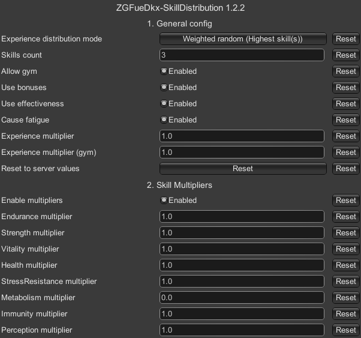

Skill Distribution
- Downloads
- 30,799
- Favourites
- 75
- Mod lists
- 149
Overview
A highly customizable mod for SPT that adds new functionalities to skill progression. Once you hit elite level on any skill, you can still earn XP in this category. Doing so distributes experience that you would gain to other non-elite skills according to your settings. Works with gym. Works with Fika.
Make sure to read Configuration tab!
Older versions are available to download in Versions tab or on GitHub
Showcase


Server settings
You can change the server config in SPT/user/mods/zgfuedkx-skilldistribution/config/config.jsonc. Open and edit it with text editor of your choice. All configuration options are explained in comments in the config file.
Client settings
Press F12 while in game to edit mod settings (you won’t be able to change these settings if allow_override is set to false on the server).

A more in-depth explanation of these options is available in the server config file.
Available options:
- Experience distribution mode - Determines how skill experience is distributed. (listed below)
- Skills count - Number of skills to distribute experience to.
- Allow gym - Whether or not XP from gym should be also distributed if strength and endurance is maxed.
- Use bonuses - Whether or not distributed XP uses target skill bonuses.
- Use effectiveness - Whether or not distributed XP uses and causes target skill fatigue.
- Cause fatigue - Whether or not distributed XP cause target skill fatigue when use_effectiveness is false. This option has no effect if use effectiveness is enabled.
- Experience multiplier - Experience multiplier of distributed XP. Use it to increase or decrease XP that is distributed. Cumulates with per-skill multipliers.
- Experience multiplier (gym) - Experience multiplier of distributed XP from workout.
- Enable multipliers - Whether to apply per-skill multipliers (doesn’t work with workout)
- [skill] multiplier - Distributed XP multiplier when [skill] is source of the XP. Cumulates with global experience multiplier
- Reset to server values - Pull settings from server and apply them.
Distribution modes
- Equal - All experience is equally distributed to all skills (if there is not enough XP, random will be used instead)
- RoundRobin - Distribute XP to one skill after another in a cyclic manner
- Random - Distribute XP to random skill(s)
- WeightedRandomMin - Distribute XP to random skill(s), skills with lower level have higher chance
- WeightedRandomMax - Distribute XP to random skill(s), skills with higher level have higher chance
- Min - Distribute XP to skill(s) with lowest level
- Max - Distribute XP to skill(s) with highest level
Fresh install
- Make sure that both client and server are closed.
- Download mod by pressing Download button at the top of this page or visit releases page on GitHub.
- Make sure that mod version matches your game version.
- Open or extract zip file.
- Drag and drop
BepInExandSPTdirectories to the root of your SPT directory. - Start server and client to make sure that mod is working.
If you are using Fika, DON’T install this mod on headless client - it will cause crashes!
Updating
Most of updates don’t break anything so follow the same steps as in Fresh install. However this mod don’t have any kind of config protection, so before updating make sure to backup config file and apply your changes again after updating.
Don’t overwrite new config with old one - something might have changed! Use your old config only as a reference and make all changes manually in a new config file.
Fixing broken installs (e.g broken config file)
Follow Fresh install steps and choose to overwrite all files when asked. After that you can apply you config changes once again.
If you found some incompatible mod, please let me know in the comments.
General rules
- This mod should work with almost all mods - it does its job by not-so-aggressive patching and usage of API provided EFT/SPT.
- Mods that overhaul skill system are most likely incompatible.
- Mods that overhaul workout are most likely incompatible.
Compatible mods
- Skills Extended by Cj
Incompatible mods
- No known incompatible mods
License
Copyright © 2025 danx91 (aka ZGFueDkx)
This program is free software: you can redistribute it and/or modify it under the terms of the GNU General Public License as published by the Free Software Foundation, either version 3 of the License, or (at your option) any later version.
This program is distributed in the hope that it will be useful, but WITHOUT ANY WARRANTY; without even the implied warranty of MERCHANTABILITY or FITNESS FOR A PARTICULAR PURPOSE. See the GNU General Public License for more details.
If you believe that this mod infringes yours or someone else’s copyrights, please contact me via Discord to resolve this issue: danx91.
If you enjoy my work, you can support me on ko-fi.
Version
1.2.2
Changes
- Added per skill multipliers
- Improved data parsing
Installation
New entries have been added to config.jsonc file - make sure to update it as well.
Version
1.2.1
- Fixed server crash caused by using fractions in
xp_multiplierorgym_multiplier
Version
1.2.0
Updated to SPT 4.0
Version
1.1.0
Changes
- Added Experience Multiplier option
- Added Experience Multiplier (gym) option